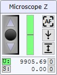
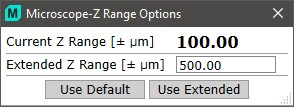

可以使用 UI摇杆控制 或 EasyLink控制器 来控制显微镜Z台：

显微镜Z（摇杆控制）
控制显微镜Z台。速度取决于物镜放大倍率。
绿色条
显示软件控制的受限Z轴的当前位置。
如果当前位置高于或低于完整范围的 95%/5%，该条变为红色。
自动对焦（按钮）
按下用户界面中或 EasyLink控制器 上的自动对焦按钮，使用视频实时图像进行 自动对焦。
自动对焦操作期间，视频图像中会显示一个矩形。该矩形在自动对焦成功时变为绿色，失败时变为红色。
 移动到Z位置（按钮）
移动到Z位置（按钮）
打开一个小弹出窗口，可在其中输入软件限制的Z位置并移动到该位置。
打开一个小弹出窗口，可扩展软件限制的Z移动范围：

使用默认值
使用正负 100 µm 的默认限制。
使用扩展
使用所需的扩展Z范围，例如正负 500 µm
用户有责任确保样品和物镜之间有足够的空间。
用户Z（单选按钮）：
显示用户控制的、无限制的Z轴位置（单位：µm）。
它显示显微镜Z台所做的所有相对移动。
用户可随时将此值设为零，例如定义对焦平面。
此值在关闭应用程序时保存。
单击以启用用户控制的、无限制的Z轴移动。
显示软件控制的、受限的Z轴位置（单位：µm）。
此位置用于自动Z轴移动，例如在深度扫描或 TrueSurface 模式中。
单击以启用受限的Z轴移动。
用于测量几何定义的Z坐标始终是软件Z坐标。这可以在不改变测量Z坐标的情况下重新对焦（因为当选择了用户Z（U:）时，更改对焦不会改变软件Z）。使用软件Z（S:）对焦，将不会改变之前定义的测量对焦。
 设零（按钮）
设零（按钮）
上方按钮将用户控制的、无限制的Z坐标设为零。
下方按钮将软件控制的、受限的Z坐标设为零。